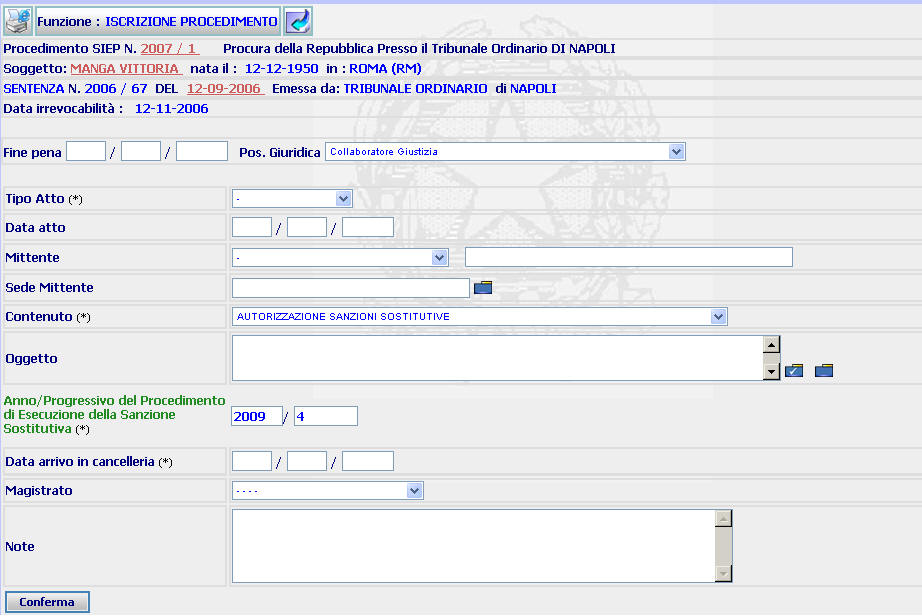
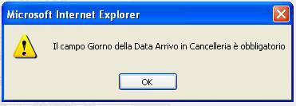
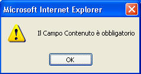
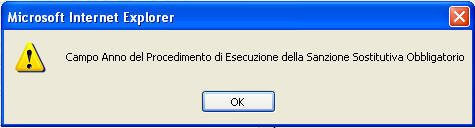
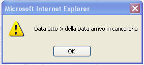

ISCRIZIONE PROCEDIMENTO RELATIVO AD ESECUZIONE DI SANZIONE SOSTITUTIVA: La funzione consente di iscrivere un procedimento relativo ad una esecuzione di sanzione sostitutiva (c.d. fascicolo "figlio").
LE MASCHERE VIDEO
La funzione viene realizzata attraverso la maschera seguente in cui compaiono i dati relativi al procedimento SIEP, i dati anagrafici del soggetto e del titolo esecutivo, nonchè l'Anno/Numero del fascicolo di Esecuzione sanzione sostitutiva (c.d. fascicolo "padre")

COME FARE PER ...
| Per visualizzare il dettaglio del soggetto l'utente deve cliccare sul link relativo al cognome/nome del soggetto evidenziato in rosso; |

| Per visualizzare il dettaglio del procedimento Siep l'utente deve cliccare sul link relativo all' Anno/Numero del procedimento Siep evidenziato in rosso; |

| Per visualizzare il dettaglio del titolo esecutivo l'utente deve cliccare sul link relativo alla data in rosso; |
| Per iscrivere un procedimento l'utente deve: |
- compilare i seguenti campi: "Tipo atto" agendo sulla tendina, "Data atto", "Mittente", "Sede mittente" , "Contenuto", "Oggetto", "data arrivo in cancelleria", "Magistrato"
- compilare (nel caso in cui non fosse già presente) l'Anno/Numero del procedimento di ESS. N.B. Se l'iscrizione viene effettuata partendo dall'elenco procedimenti relativi all'esecuzione di una sanzione sostitutiva questi campi risultano automaticamente compilati.
- confermare i dati inseriti selezionando il bottone
N.B. Una volte iscritto il procedimento, il sistema assegna allo stesso un numero progressivo
CAMPI
I campi da compilare sono i seguenti:
| Fine pena | Campo non digitabile poichè i dati provengono dal titolo esecutivo |
| Posizione giuridica | Campo non digitabile poichè i dati provengono dal titolo esecutivo |
| Tipo atto | Campo (obbligatorio) nel quale va inserito, attraverso l'apposita tendina, il tipo di atto depositato. |
| Data atto | Campo nel quale può essere inserita la data dell'atto |
| Mittente | Campo nel quale può essere inserito, attraverso l'apposita tendina, il mittente |
| Sede mittente |
Campo nel quale va inserita la sede del mittente (digitandolo per intero
o selezionandolo attraverso l'apposito
Pulsante di
Ricerca da Lista Predefinita |
| Contenuto | Campo (obbligatorio) nel quale va inserito, attraverso l'apposita tendina, il contenuto del procedimento da iscrivere |
| Oggetto |
Campo nel quale va inserito, selezionandolo
attraverso l'apposito
Pulsante di
Ricerca da Lista Predefinita |
| Anno/Progressivo proced. ESS | Campo nel quale va inserito, nel caso in cui lo stesso non risulti precompilato, l'anno/numero del fascicolo di ESS |
| Data arrivo in Cancelleria | Campo (obbligatorio) nel quale va inserita la data di arrivo del procedimento nella propria Cancelleria |
| Magistrato | Campo nel quale va inserito il nome del magistrato assegnatario, che coincide con il relatore, del procedimento |
| Note | Campo a testo libero dove è possibile inserire eventuali annotazioni |
PULSANTI
E' presente
il pulsante
 facente
parte del gruppo di
pulsanti di "Uso Comune"
facente
parte del gruppo di
pulsanti di "Uso Comune"
BOTTONI
Oltre ai comandi funzionali relativi al menù verticale è presente il seguente bottone:
|
COMANDI |
DESCRIZIONE |
|
|
A fronte di tale comando, il sistema dopo aver verificato la validità dei dati specificati, presenta la maschera di dettaglio procedimento ESS. |
CONTROLLI
Il sistema effettua i seguenti controlli:
|
verifica che il campo "Data arrivo in Cancelleria" sia stato compilato ed in caso contrario fornisce il seguente messaggio |

|
verifica che sia stato inserito il contenuto del procedimento da iscrivere ed in caso contrario fornisce il seguente messaggio |

|
verifica che sia stato compilato il campo Anno/Progressivo proced. ESS ed in caso contrario fornisce il seguente messaggio |

|
verifica che la data dell'arrivo in cancelleria non preceda quella dell'atto ed in caso contrario fornisce il seguente messaggio |
